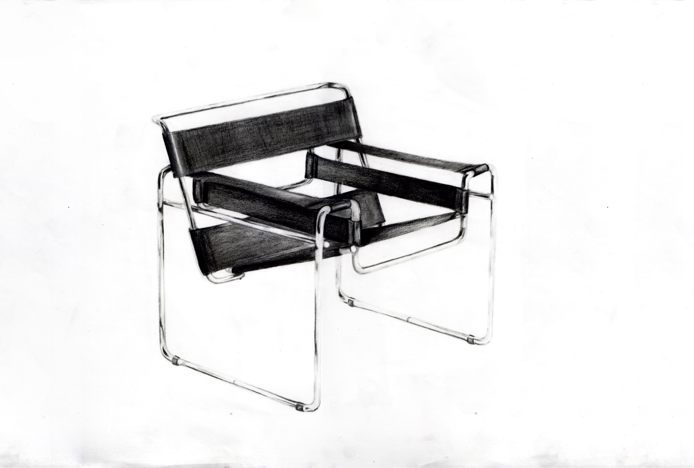
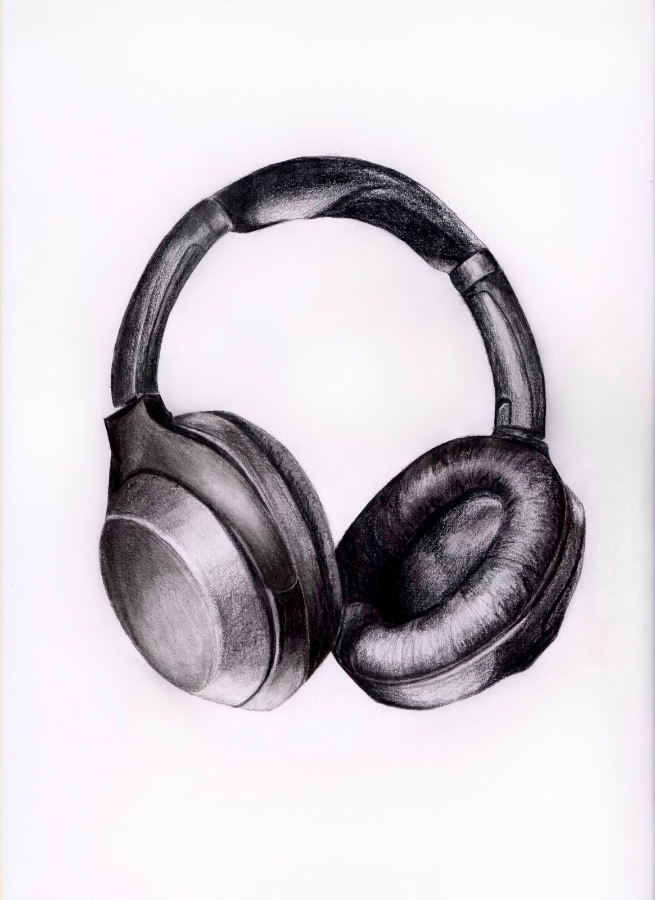
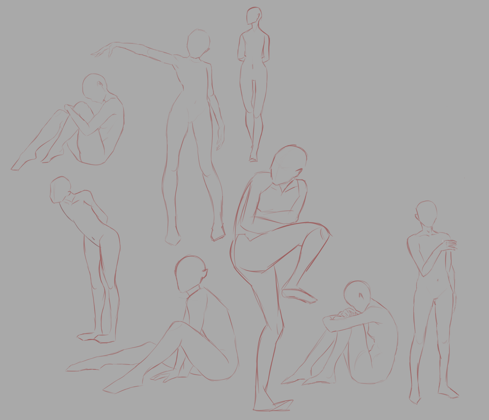

O meni
HI! Ja sam Petra Mihaljević. Imam 21 godinu. Na Grafičkom fakultetu sam završila nakon što sam pauzirala godinu....(dvije) jer sam u zadnji čas skužila da me psihologija ipak ne zanima toliko i trebalo mi je vremena da se nađem ali to je okej jer sada mi je ovdje super. U slobodno vrijeme najviše volim crtati tako da sam ovdje stavila par svojih radova. Najviše volim crtati digitalno ili jednostavno samo s olovkom i gumicom. Jedan od velkih interesa mi je glazba iako što slušam i koga slušam mijenjam svaki mjesec. Tu i tamo čitam (cilj mi je da se to češće dešava), zadnja knjiga koju sam pročitala je bila Murakamijeva Norveška šuma, sljedeća knjiga na listi mi je Kafka on the shore.
Moji crteži



